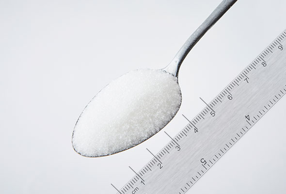
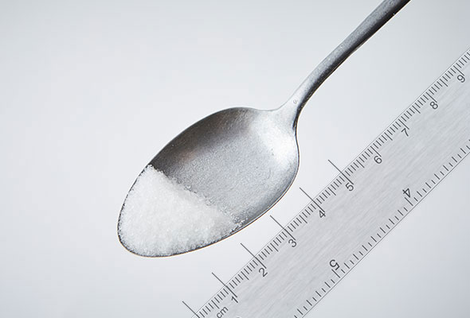

밥숟가락 계량
테이블스푼(T)과 티스푼(t)은 어느 정도일까요? - 성인용 밥숟가락으로 계량해 볼 수 있어요.
-

1 테이블스푼 (1T) = 15ml
밥숟가락 1 큰술 정도의 양
-

1 티스푼 (1t) = 5ml
밥숟가락 1/3 큰술 정도의 양
테이블스푼(T)과 티스푼(t)은 어느 정도일까요? - 성인용 밥숟가락으로 계량해 볼 수 있어요.
밥숟가락 1 큰술 정도의 양
밥숟가락 1/3 큰술 정도의 양
밥숟가락 단위보다 더 많은 양은 어떻게 계량해야 할까요? - 소형 종이컵에 한 컵 가득 담은 양을 참고하여 가늠해볼 수 있어요.
자주 쓰는 재료들의 무게가 궁금해요! - 사진에 담긴 재료의 양을 참고하여 눈대중으로 분량을 재어봅시다.